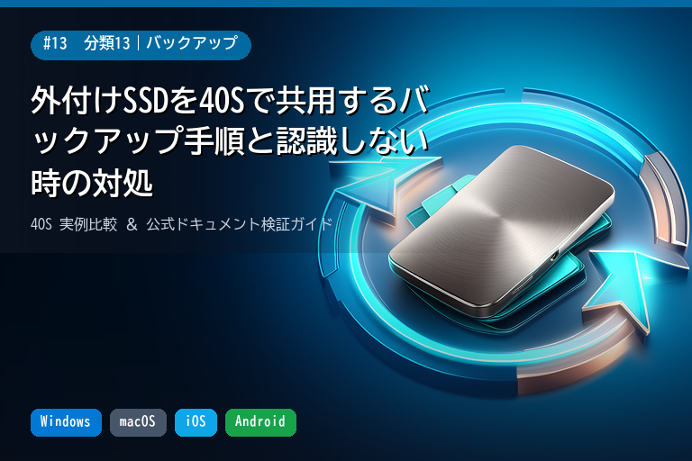

#13｜分類13: ファイル管理・バックアップ・データ復旧 2026-11-23

外付けSSDを4OSで共用するバックアップ手順と認識しない時の対処｜Windows・macOS・iOS・Android
「外付けSSDを1台用意して、Windows PCでもMacでも、さらにはiPhoneやAndroidスマホでも使い回したい」と考えていませんか？
しかし、いざ接続してみると「Macでは読み込めるのにWindowsでは書き込めない」「スマホに繋いだら認識されない」といったトラブルに直面し、挫折してしまう方も少なくありません。これはOSごとに推奨される「ファイルシステム（フォーマット）」が異なることが原因です。
この記事では、Windows、macOS、iOS、Androidの4つのOSすべてで快適に共用するための最適解「exFAT」を軸とした運用術と、各OSでの具体的なバックアップ手順、そして「認識しない時」のトラブルシューティングを徹底解説します。
4OS比較早見表
| OS | 推奨フォーマット | 特徴・注意点 | バックアップ機能 |
|---|---|---|---|
| Windows 11 | exFAT | 標準はNTFSだが、exFATならMac/スマホとも互換。 | システムイメージ作成（Pro以上） |
| macOS | exFAT | 標準はAPFS/HFS+。exFATではTime Machine不可。 | Time Machine |
| iOS (iPhone) | exFAT | USB-Cモデルは直接接続可。ファイルアプリで操作。 | iCloud / ローカルコピー |
| Android | exFAT | MTPモード経由、または直接接続（機種による）。 | Google Drive / ローカルコピー |
1. Windows 11 での実例手順
Windows環境では、外付けSSDを「大容量の移動式ストレージ」として最も自由に扱えます。
標準機能での実例手順
- ファイル共有: 「エクスプローラー」を開き、接続したSSDを選択します。バックアップしたい写真フォルダや動画ファイルをドラッグ＆ドロップするだけでコピーが完了します。
- システムバックアップ（イメージ作成）:
- 「設定」→「Windows の更新とセキュリティ」→「バックアップ」へ進みます。
- 公式機能「PC のバックアップおよび復元」を使用し、外付けSSDを宛先として選択します。
- 注意: この機能は Windows 10/11 Proエディション以上でのみフル機能が利用可能です。
標準機能の制限事項・注意点
- システムファイルへの書き込み不可: SSDを接続していても、Windowsのシステムフォルダ（Windows, Program Filesなど）へ直接上書きすることは保護機能により制限されます。
- Home エディションの制限: Homeエディションでは「PC をバックアップおよび復元」機能が標準で提供されないため、後述する「ファイル履歴」やサードパーティ製ソフトの活用が必要です。
よくあるトラブルと解決法 3 選
- 「外付け SSD が認識しない・表示されない」
- 原因: USBケーブルの接触不良、USB Hub経由による電力不足、またはフォーマットが非互換（NTFS/FAT32等）の場合。
- 解決策: 別のUSBポートに直接接続し直す。デバイスマネージャーで「ディスクドライブ」を確認し、黄色い感嘆符がある場合はドライバーを再インストールしてください。
- 「コピー中に『読み取り専用』エラーが出る」
- 原因: SSDの物理的なロックスイッチが入っているか、ファイルシステムのエラーによる自己防衛。
- 解決策: 物理スイッチを確認。改善しない場合、管理者権限でコマンドプロンプトを開き
chkdsk X: /f（Xはドライブ文字）を実行して修復を試みてください（※データ損失リスクがあるため注意）。
- 「バックアップ設定画面からドライブが選択できない」
- 原因: 容量不足、またはHomeエディションの制限。
- 解決策: 空き容量を確認する。Homeユーザーは「ファイル履歴」を設定するか、クラウドバックアップを検討してください。
2. macOS での実例手順
MacではTime Machineという強力なバックアップ機能がありますが、4OS共用を優先する場合は操作に注意が必要です。
標準機能での実例手順
- 手動バックアップ: 「Finder」を開き、SSDを選択します。iCloudフォトライブラリやデスクトップ上のファイルをコピーして保存します。
- 外付けストレージとしての認識: 「システム設定」→「一般」→「AirDrop や Time Machine で利用可能なネットワークと外付けストレージ」からSSDを確認できます。
標準機能の制限事項・注意点
- exFAT と Time Machine の不両立: ここが重要です。 exFATでフォーマットされたSSDは、Macの標準バックアップ機能「Time Machine」の宛先として選択できません（Time MachineはAPFS/HFS+を要求するため）。
- ファイル名の制限: exFATでは日本語の特殊文字や極端に長いパス名において、稀に不具合が生じることがあります。
よくあるトラブルと解決法 3 選
- 「Time Machine の設定画面に SSD が表示されない」
- 原因: SSDがexFATでフォーマットされているため、バックアップ宛先として認識されない。
- 解決策: Time Machineを優先するなら「ディスクユーティリティ」でSSDを「APFS」に再フォーマットしてください（※全データ消去されます）。
- 「コピー中に『読み取り専用』エラー」
- 原因: WindowsからMacへコピーした際、フォーマットがNTFSのままになっている。
- 解決策: 「ディスクユーティリティ」でSSDを「exFAT」に再フォーマットしてください。
- 「バックアップが中断し、エラーメッセージが出る」
- 原因: USBケーブルの断線やポートからの脱離。
- 解決策: Time Machineを一度オフにし、再度SSDをしっかり接続してからオンに切り替えてください。
3. iOS（iPhone / iPad）での実例手順
近年のiPhone（USB-Cモデル等）は外付けストレージとの親和性が高まっていますが、操作にはコツが必要です。
標準機能での実例手順
- ケーブル接続: iPhoneにSSDを接続します。iOS 17.4以降では「設定」→「一般」→「AirDrop と外付けストレージで利用可能なネットワークと外付けストレージ」からファイル共有の設定が可能です。
- 写真のバックアップ: 標準の「写真」アプリから直接SSDへ「全選択→共有→ファイル」という操作は、機種やOSバージョンにより制限があるため、「ファイル」アプリを介した管理が最も確実です。
標準機能の制限事項・注意点
- 直接コピー不可（USB ケーブル時）: iOSのセキュリティポリシーにより、写真アプリからワンタップでSSDへ保存できない場合があります。その場合はPCを経由するか、「ファイル」アプリ内で操作を行うのが公式推奨に近い挙動です。
- ファイル形式の制限: exFATは対応していますが、特定の動画コーデック（HEVC等）をそのまま保存すると再生できないケースがあります。
よくあるトラブルと解決法 3 選
- 「USB を繋いでも『信頼』または『ファイルを転送』が表示されない」
- 原因: 設定で「PC と iTunes で利用可能なネットワーク」がオフ、またはケーブルの接触不良。
- 解決策: 「設定」→「一般」→「AirDrop や Time Machine で利用可能なネットワークと外付けストレージ」から該当デバイスを選択し、「ファイルを転送」をオンにします。
- 「写真アプリで SSD が選択肢にない」
- 原因: セキュリティポリシーによる書き込み制限。
- 解決策: PCに接続し、PC側の「ファイル」アプリやFinderからiPhone内のデータを抽出・コピーしてください。
- 「バックアップ中に画面がフリーズ」
- 原因: SSDの容量不足またはケーブルの電力供給不足。
- 解決策: 一度転送をキャンセルし、USBケーブルを抜き差しして再試行してください。
4. Android での実例手順
Androidは機種（Pixel, Galaxy等）によってメニュー構成が異なりますが、基本は「MTPモード」の活用です。
標準機能での実例手順
- PCとの接続: USBを繋ぎ、通知パネルから「ファイルの転送」を選択します。
- 設定の確認: 「設定」→「接続」→「USB デバイス使用法」等で「メディア転送（MTP）」がオンになっているか確認します。
- SSDへの保存: Androidの「ファイル」アプリ（または機種独自のファイルマネージャー）を開き、外付けSSDを選択してファイルをコピーします。
標準機能の制限事項・注意点
- 直接接続の制限: 一部の安価なモデルや古いモデルでは、USBポートからの給電能力が低く、SSDを認識しないことがあります。その場合はセルフパワー式のUSBハブが必要です。
よくあるトラブルと解決法 3 選
- 「PCに繋いでも中身が見られない」
- 原因: スマホ側が「充電のみ」モードになっている。
- 解決策: 通知欄から「ファイル転送」をタップしてください。
- 「SSDのフォルダが開けない・読み取れない」
- 原因: フォーマットがNTFSである（Androidは標準でexFAT/FAT32を推奨）。
- 解決策: PCに接続し、SSDを「exFAT」に再フォーマットしてください。
- 「転送中にアプリが強制終了する」
- 原因: 大容量ファイルの連続転送によるメモリ不足や電力不足。
- 解決策: ファイルを小分けにしてコピーするか、給電の安定したポートを使用してください。
まとめ：快適なマルチOS環境を作るポイント
4つのOSすべてで外付けSSDを共用するための鍵は、「exFATフォーマット」の徹底と「物理的な接続環境（電力・ケーブル）」の整備にあります。
快適なバックアップ環境を構築するために、以下の要素を組み合わせるのがプロの推奨です。
- 外付けHDD/SSD: 物理的なバックアップの第一歩です。exFATでフォーマットされた高速なNVMe SSDを選べば、4OSでのストレスが激減します。
- データ復旧ソフト: 万が一の誤操作やファイル破損に備え、信頼できるデータ復旧ツールを常備しておくことは安心に繋がります。
- バックアップソフト: Windowsの「ファイル履歴」やMacの「Time Machine」など、OS標準の自動化機能を活用することで、手動コピーの手間を省けます。
- クラウドバックアップ: 物理的なSSDに加え、Google DriveやiCloudなどのクラウドへも重要なデータを同期させる「二重の守り」が、現代のデータ管理における最適解です。
適切なフォーマットとツール選びで、デバイスの垣根を超えたスムーズなデータ運用を実現しましょう。
参考文献・公式ドキュメント（一次情報ソース）
本記事の手順・仕様は以下の各OSおよびツールの公式ドキュメントに基づいています。OSアップデートによりメニュー名称や挙動が変わる場合があるため、最新仕様の確認にもご活用ください。